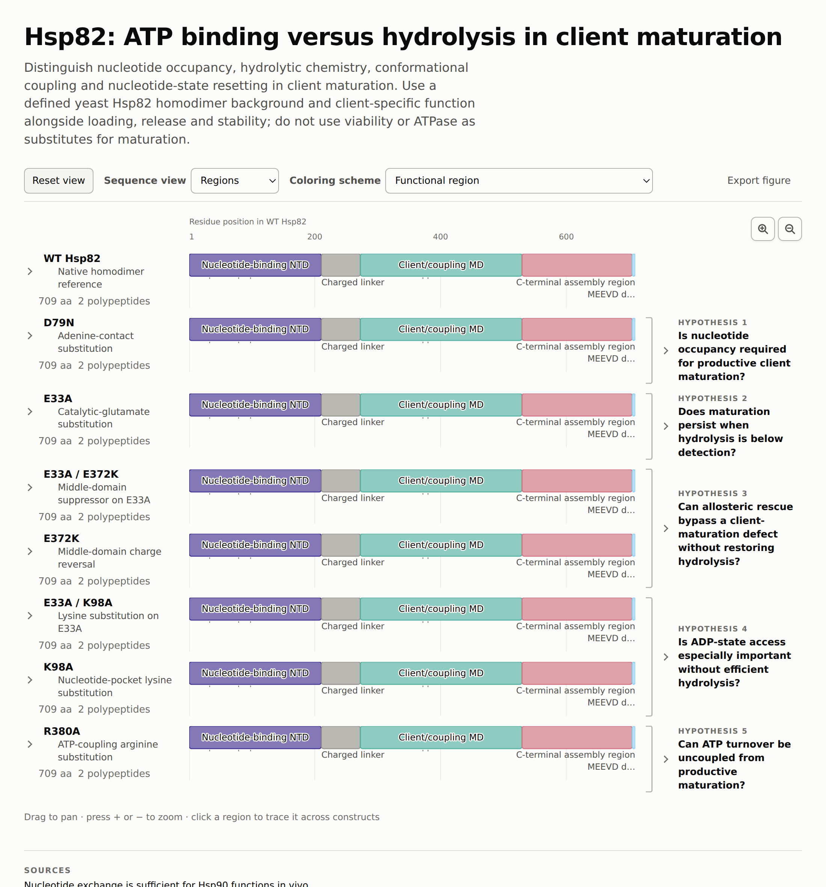
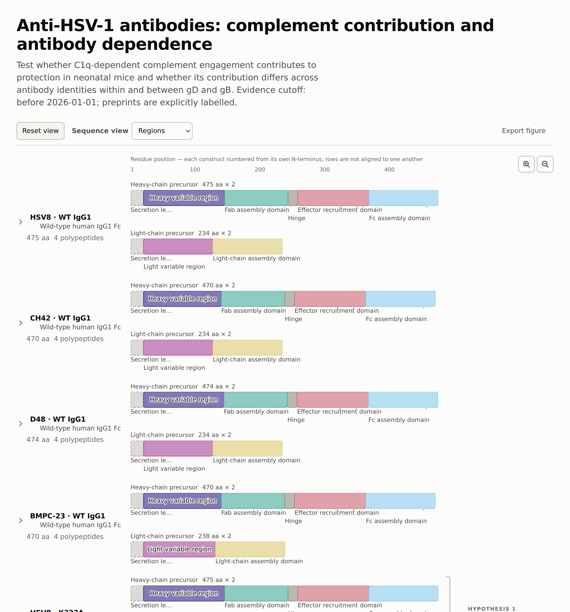
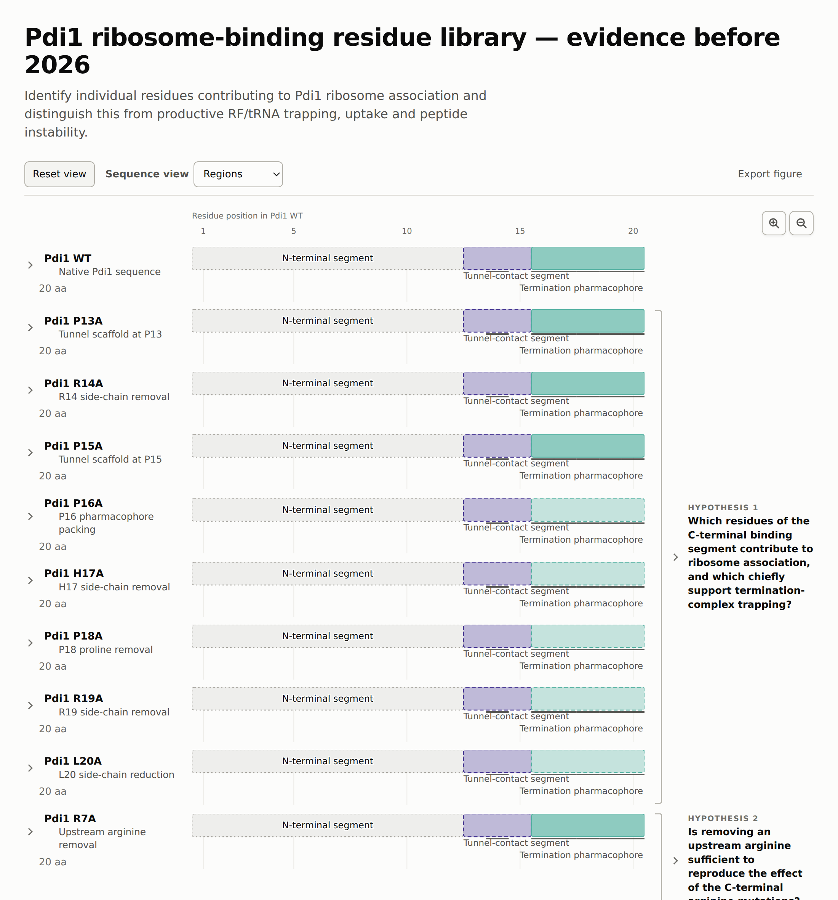
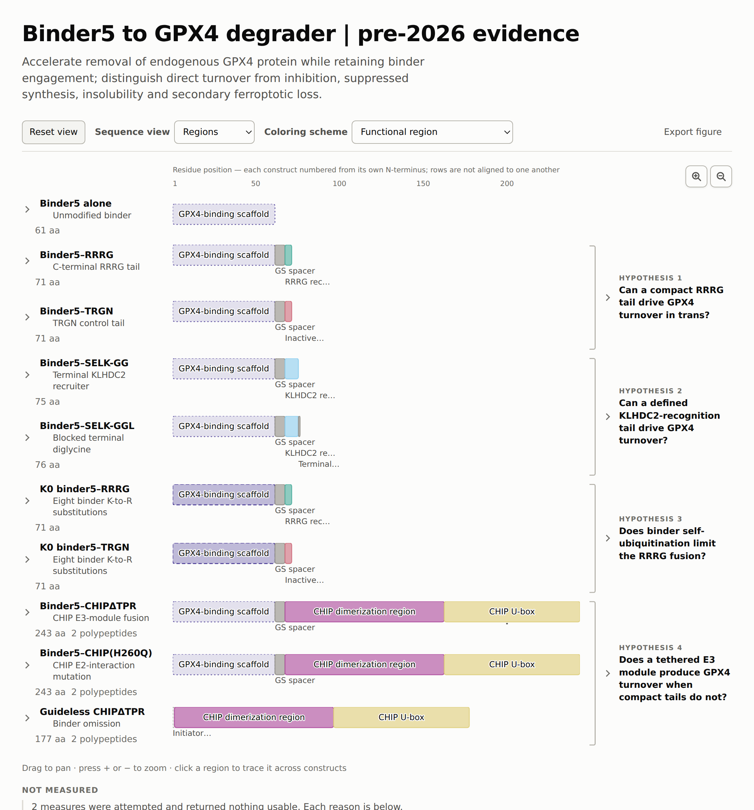

Hsp82: ATP binding versus hydrolysis in client maturation
A familiar system, to see what the plugin produces from a research question.
Design & visualize constructs
Design and visualize protein and peptide constructs to investigate biological function. Start from a biological question, a design goal, or constructs you already have.

A familiar system, to see what the plugin produces from a research question.
Each question was given to the plugin in two products. Open a case to set what each proposed beside what the published paper tested.

Why do substitutions at P94 raise the activity of Staphylococcus aureus sortase A, and is the β7-β8 loop involved?

Does complement engagement contribute to protection by antibodies against HSV-1 in neonatal mice, and does it do so across antibodies?

Which residues of the proline-rich antimicrobial peptide Pdi1 drive its binding to the bacterial ribosome?

Does the prion-like domain of Drosophila Patronin recognize microtubule minus ends through its primary sequence or through its capacity to condense?

How can a designed binder to human GPX4 be turned into a degrader that removes GPX4 rather than only binding it?